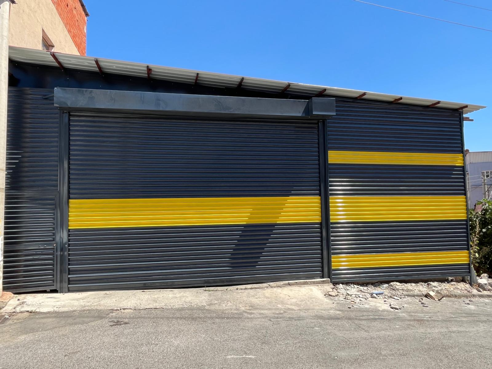
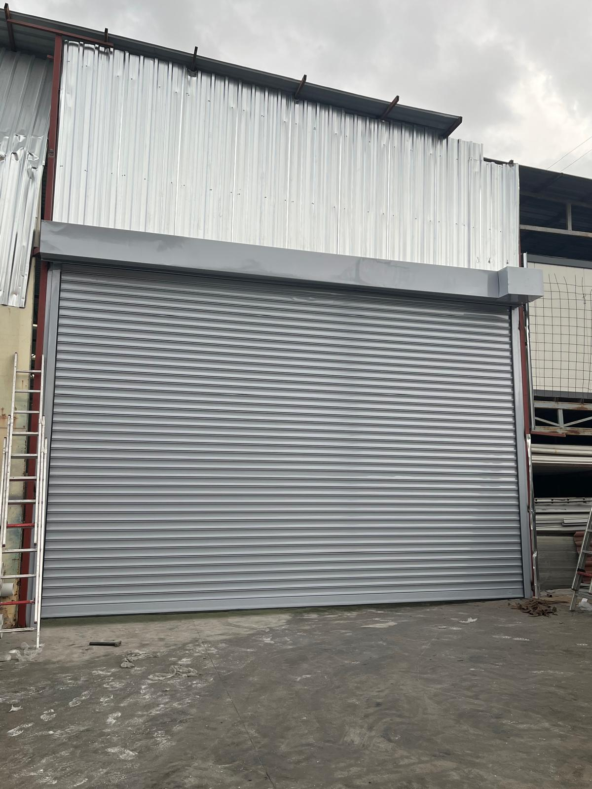
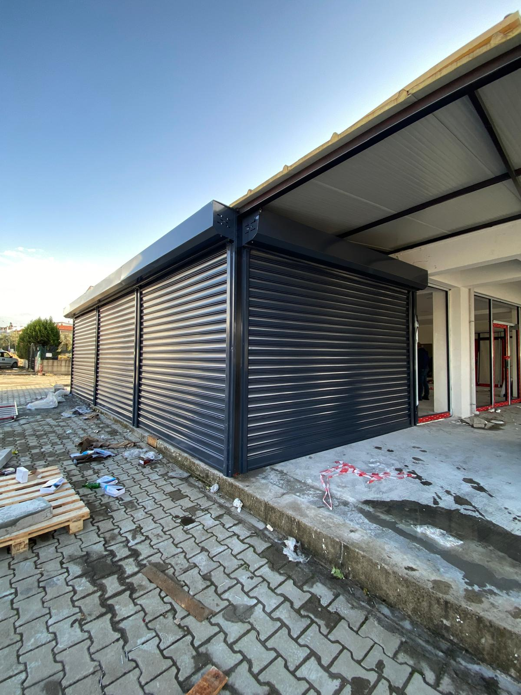

Otomatik kepenk, garaj kapısı ve kapı sistemlerinde montaj, tamir ve 7/24 acil servis hizmeti sunuyoruz.

İşyerinizin güvenliğini ve estetiğini bir arada sunan otomatik kepenk sistemleri. Çelik, alüminyum ve galvaniz seçenekleriyle her ihtiyaca özel çözüm üretiyoruz.

Konut ve ticari yapılar için modern garaj kapısı çözümleri. Uzaktan kumandalı, pratik ve güvenli sistemler kuruyoruz.

İş merkezleri, mağazalar ve endüstriyel tesisler için sensörlü ve otomatik kapı sistemleri. Güvenli, hızlı ve dayanıklı çözümler.
Tüm hizmetlerimiz için ücretsiz keşif ve fiyat teklifi. Kredi kartına taksit imkânı.
📞 0541 171 94 93